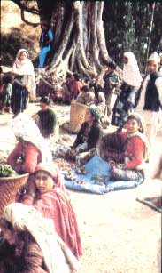
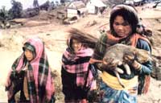
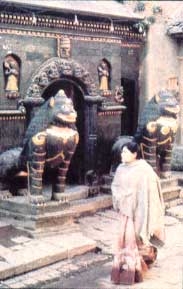
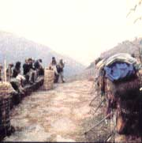
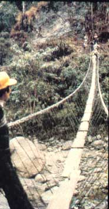
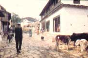
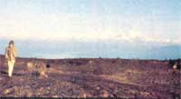
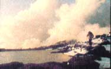

Helen Keller probably summed it up best: "Life is either a daring adventure or nothing."
STAFF PHOTOS
A weekly bazaar, Nepalese style.
Three Sherpas and their pet.
ne of Kathmandu's exotic temples.
The porters take a break
A bridge of "questionable intergrity".
Chainpur, the brass center.
Makalu and its neighboring peaks at dawn.
Sunset on a mountain lakes.
"Hello! Good morning! Tea!" a gentle voice announced outside the tent. It was 6:00 a.m., and-as just a small part of the impeccable service provided by Journeys' Pemba Tsering Sherpa and his Nepalese staff-we enjoyed our morning "cuppa" without venturing out of our sleeping bags. While still-sleepy hikers sipped the welcome brew, pans of hot washing water were placed at the doors of our tents . . . and another adventure-filled day on MOTHER'S trek to the remote Arun Valley region of eastern Nepal began.
A COMFORTING ROUTINE
We soon fell into the camp routine . . . dressing quickly and packing our duffels so that the porters-who carried 80-pound loads in their tall baskets with seeming ease-could get an early start. As we gathered for a big breakfast, the Sherpa guides struck and packed the tents . . . and around 7:00 a.m., leaving the kitchen staff to clean up, we took to the trails.
Ah, the trails! Though the footpaths we traveled are the superhighways of Nepal, they're not the neatly maintained variety-designed with reasonable grades and handy switchbacks-familiar to most American backpackers. Instead, they follow the Nepalese notion that the only logical way to get from one point to another is (whenever possible) to travel in a direct line . . . regardless of whether that course takes them 3,000 feet straight up a ridge and then drops, just as precipitously, down on the other side.
Streams and waterfalls pour down the mountain slopes, too, resulting in challenging crossings on a variety of ingenious bridges . . . many of which appear to be of questionable integrity! Over the larger rivers, aging planks rest on wire loops, which-in turn-are attached to a couple of (often well-rusted) chains or cables strung high above the tumbling waters.
Despite such obstacles, the distances that we covered were-on some days-little short of phenomenal, reminding us that steady, determined footpower is an amazingly effective form of transportation (a fact that's all too easily forgotten in our car-oriented society). Yet each individual was easily able to set his or her own pace, and if one dropped an hour or so behind to socialize with the locals in a smoky teahouse ... to play with a fat, laughing baby ... to admire a newborn goat ... or simply to rest legs and lungs that were protesting with a bit too much insistence, an arrow-scratched in the dirt by a guide-would always show which branch of the trail the group had taken.
Off and on during a typical morning, members of our jaunty, singing kitchen crew-carrying dishes and cooking paraphernalia-would pass us by ... and at midday they'd have a hot lunch ready and waiting. In the afternoon the same buoyant group would pass us again, and as soon as we straggled into the right's campsite, tea and biscuits were served . . . followed soon thereafter by a delicious, full-course meal.
AN EXOTIC, ANCIENT WORLD
However, if the trekking routine soon became comfortingly familiar, our surroundings were a constant source of surprise and delight. Almost every valley contains its own ethnic group or mix of races-Newars, Limbus, Chhetris, Sherpas, Tibetans, and Tamangs-each of which has its own colorful dress, jewelry, customs, houses, and temples.
Nature, too, offered rich and exotic rewards ... as we climbed up from the fertile farmlands of the tropical Tarai, through pines and oaks, and into misty, moss-covered rhododendron forests whose 60-foot-high trees were just beginning to put forth their showy blossoms. Candy-colored birds sent us scrambling for binoculars and cameras, and monkeys fought and screamed in the giant ferns. During our visit to one small Tibetan village, young girls came to the campfire and-without being asked-sang and danced for us with a grace that was all the more amazing for its spontaneity . . . while shadowy jackals raced past just beyond the firelight and howled eerily at the swelling moon.
Our legs-surprising many of us with their staying power-took us high above the clouds, but the towering peaks of Makalu and the Kanchenjunga range still loomed ominously above us when we camped at 11,500 feet. And that night a freak snowstorm, accompanied by slashes of lightning and booming thunder, discouraged all but a hardy few from struggling the next day-sometimes through waist-deep drifts-to yet higher elevations.
On other days we plodded across the edges of rice paddies that rose in terraced audacity for thousands of feet up the sides of steep slopes . . . and passed through friendly, prosperous mountain towns. (Upon leaving Chainpur, Nepal's remote brassmaking center, we found that we had to hire another porter to carry all the low-cost artwork we'd bought. There, too, nearly 20 of our group enjoyed a tasty, all-we-could-eat meal in a local restaurant ... for a total bill of less than $10!) And it seemed that we had only to pass a school to put an end to that day's classes: Outsiders, you see, don't often visit the part of the country through which we traveled, and our arrival was usually an event celebrated by the whole village.
TREKKING FEVER
When we finally reached Tumlingtar's dirt airstrip, from which a small twin-engine plane would fly us past Everest and a string of equally magnificent peaks on the first leg of our journey home, it was with wistful sadness that we bade some of our new Nepalese friends goodbye. At that point many of us remembered that on first arriving in the fabulous, temple-strewn city of Kathmandu, we'd talked to a couple who had just returned from a long trek of their own. "We wish we were going back with you," they'd said, but-with some worries about how we'd handle the often grueling journey ahead-we had assumed they were just being polite.
Well, we were wrong! There is a special magic about the Himalayas ... a natural rhythm to life there that makes any lack of modern-day amenities seem ridiculously unimportant . . . and a great deal of truth in the saying, "You don't change Nepal. It changes you." Therefore, we're glad to tell you that from March 12 to April 1, 1983 we'll offer "A Himalayan Spring Spectacular" trek.
At that time, the rhododendrons in the Annapurna region of western Nepal, where we'll hike for over a week, should be in full bloom. Better still, our second Nepalese tour will include a raft trip down the Trisuli River to the Royal Chitwan National Park, where we'll ride elephants on a photo safari in search of rhinos, tigers, crocodiles, and other wildlife. In short, we'll have opportunities to savor as much of this remote kingdom's diverse culture, dramatic topography, natural habitat, and adventurous challenge as the three-week trip will allow! The tentative cost is $2,750 (including airfare), and a $200 deposit will hold your place.
AND FURTHERMORE . . .
Of course, we wouldn't want to miss mentioning MOTHER'S other upcoming tours (which we wouldn't sponsor if they weren't equally special!): [1] "A Wild-Plant Walk in the Alps", the best in Swiss and Austrian alpine scenery, with Amsterdam's once-in-a-decade flower show thrown in for good measure (June 11 to 27, 1982 . . . cost, $1,770 . . . deposit $200). [2] "A Raft Trip on the Tatshenshini", a true wilderness adventure on one of Alaska's most spectacular rivers (August 15 to 26, 1982 . . . cost, $1,490 ... deposit, $250). [3] "Biking China", a 21-day bicycle trip through the Yangtze Valley in the People's Republic of China (September 30 to October 20, 1982 . . . cost, $2,978 . . . deposit, $300). [4] A repeat of our "Energy Tour of France" (October 14 to 24, 1982 . . . cost, $1,395 . . . deposit, $200). [5] A second "South Seas Seminar" with Anne and Paul Ehrlich and John and Cheryl Holdren (January 23 to February 6, 1983 . . . cost, $2,495 . . . deposit, $200).
To reserve a place on any of our expeditions, send your deposit-by check or money order-to Mother's Tours, P.O. Box 70, Hendersonville, North Carolina 28791 ... or write to the same address for more information.
|
 |
 |
 |
|
 |
 |
 |
|
 |
 |
|